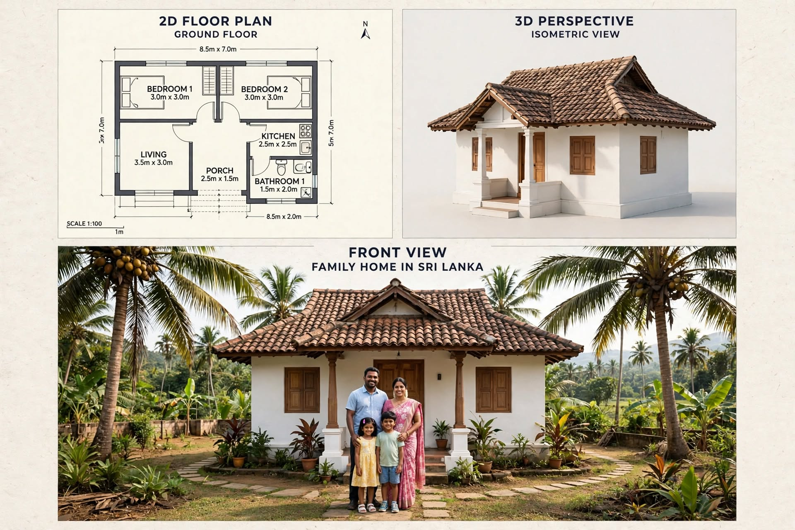

SMALL HOUSE PLANS · ARTICLE 08
8.5 m × 7 m Two-Bedroom Small Family House Plan
A compact two-bedroom home concept with a front porch, separate kitchen, tiled roof and Sri Lankan family-home exterior.

This guide reviews the supplied image as a design concept. It separates what is visibly stated in the drawing from items that still need professional measurement and confirmation.
1. Layout Overview
The plan places two bedrooms along the rear portion, a living room toward the front-left, a kitchen toward the front-right, and a small porch near the entrance. The bathroom is beside the kitchen zone. This is a familiar compact family-home arrangement, with shared spaces near the entrance and sleeping rooms set farther inside.
2. Room Dimensions and Area Checks
The drawing labels Bedroom 1 and Bedroom 2 as 3.0 m × 3.0 m each, the living room as 3.5 m × 3.0 m, the kitchen as 2.5 m × 2.5 m, the bathroom as 1.5 m × 2.0 m and the porch as 2.5 m × 1.5 m. These labels are useful as a preliminary brief, but they do not fully resolve the drawn wall layout or circulation. Confirm whether the porch is included in the 8.5 m × 7.0 m external rectangle.
3. Bedroom and Living Furniture
Each 3 m × 3 m bedroom needs a carefully scaled furniture plan. A double bed may fit, but wardrobe depth, door swing and access on both sides must be checked. In the living room, a compact sofa and wall-mounted television can preserve floor space. Keep a direct route to the porch, bedrooms and kitchen.
4. Kitchen and Bathroom Coordination
The 2.5 m × 2.5 m kitchen is compact. A straight or short L-shaped counter may be more practical than a large island. Mark the refrigerator, sink, cooktop, preparation surface and storage. The bathroom label of 1.5 m × 2.0 m is also compact; the toilet, basin and shower arrangement must be tested to scale, including door opening and waterproofing.
5. Pitched Roof and Front Porch
The 3D views show a traditional pitched roof with clay-style tiles and a small covered porch. Confirm roof pitch, ridge height, eaves, gutters and downpipes for the local rainfall pattern. The porch should provide shade without blocking living-room daylight. White rendered walls and timber-coloured doors can create a simple, low-maintenance exterior when specified with weather-resistant finishes.
Construction, Services and Budget Planning
Before construction, confirm the site boundaries, access, levels, soil conditions and approval requirements. A qualified local professional should prepare the measured architectural and structural drawings. The normal sequence is setting out, foundations, floor and wall construction, roof installation, first-fix plumbing and electrical work, plastering, waterproofing, doors and windows, finishes, testing and final inspection.
Prepare a project-specific bill of quantities rather than relying on a generic online price. Include excavation, concrete, reinforcement, blocks or bricks, roof materials, doors, windows, plumbing, electrical work, waterproofing, flooring, paint, labour, transport, approvals and a contingency. Actual costs in Sri Lanka vary by district, access, soil, specification, supplier and quotation date.
Important Professional Checks
- Verify all external and internal dimensions on a scaled drawing.
- Coordinate door swings, window openings, furniture clearances and circulation.
- Have foundation, columns, beams, lintels and roof structure designed for the site.
- Plan safe electrical circuits, earthing, water supply, drainage and ventilation.
- Check local planning rules, setbacks, approvals and applicable building standards.
Disclaimer: This article explains an illustrative design concept. It is not an architectural, structural, engineering or cost-certified document and must not be used alone for construction.